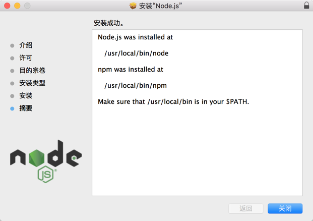
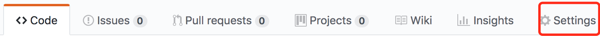
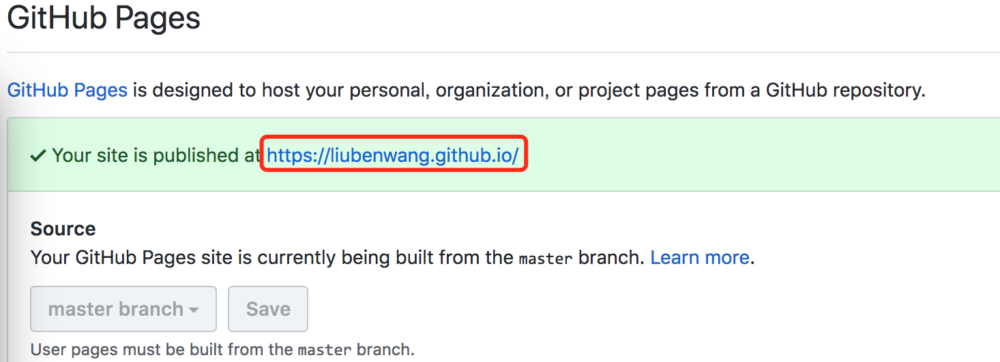
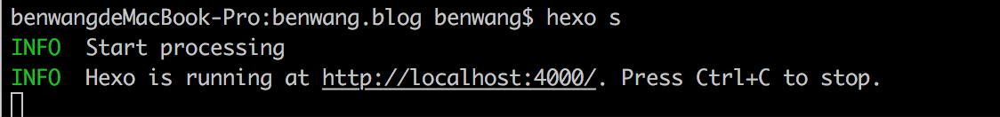

如果你想搭建一个与本站一模一样的博客，看这篇文章就对了！！这篇文章将介绍如何零成本快速搭建属于自己的博客，包括如何搭建Hexo环境、如何使用NexT配置主题样式、如何进行个性样式的修改以及过程中可能遇到的问题和解决办法，希望能帮助到大家！
准备工作
安装Homebrew
终端执行以下命令用于安装Homebrew
1 | /usr/bin/ruby -e "$(curl -fsSL https://raw.githubusercontent.com/Homebrew/install/master/install)" |
查看brew的版本信息
1 | $ brew -v |
安装Git
终端执行以下命令用于安装git
1 | $ brew install git |
查看git的版本信息
1 | $ git --version |
安装Node.js
使用安装包安装node.js，安装包自带npm
查看node和npm的版本信息
1 | $ node -v |
1 | $ npm -v |
安装Hexo
所有必备的应用程序安装完成后，即可使用 npm 安装 Hexo。
1 | $ npm install -g hexo-cli |
创建Git仓库
在GitHub上创建名称为 {username}.github.io的托管仓库，名称不同最后生成的GitHub Page网址会有所不同，可通过此处查看最后的网址：托管仓库/Settings/GitHub Page，如下图

如果没有GitHub Page网址，可在Source下选择master branch后，点击Save，刷新等待即可
开始使用
建站
安装 Hexo 完成后，请执行下列命令，Hexo 将会在指定文件夹中新建所需要的文件。
1 | $ hexo init <folder> |
新建完成后，指定文件夹的目录如下：
1 | . |
配置
在_config.yml文件中配置网站的配置信息，在此仅介绍稍后会用到的配置选项，在所有的冒号:后边都要加一个空格，否则执行hexo命令会报错
网页配置
搜索site进行网页配置
| 参数 | 描述 |
|---|---|
title |
网站标题 |
subtitle |
网站副标题 |
description |
网站描述（用于SEO搜索，包含网站的关键词） |
author |
您的名字 |
language |
网站使用的语言（根据安装的主题包提供的语言包设置，如：zh-Hans） |
链接配置
搜索url进行链接配置，用于在保存网址时使用，建议设置为首页网址，如：在浏览器保存网址或添加书签，如不设置此选项，则保存的网址是错误的
| 参数 | 描述 | 默认值 |
|---|---|---|
url |
网址 | |
root |
网站根目录 | / |
如果您的网站存放在子目录中，例如
http://yoursite.com/blog，则请将您的url设为http://yoursite.com/blog并把root设为/blog/。
写作配置
搜索wirting进行写作设置，主要用于编辑文章
| 参数 | 描述 | 默认值 |
|---|---|---|
default_layout |
预设布局 | post |
render_drafts |
显示草稿 | false |
post_asset_folder |
启动 Asset 文件夹 | false |
highlight |
代码块的设置 |
default_layout：默认布局方式，布局方式有 post(文章)、draft(草稿)、page(页面)，也可以自己定义模板。
render_drafts：后续会用到，建议开启，用于在本地预览时显示草稿内容
post_asset_folder：后续会用到，建议开启，用于在编辑内容时提供资源，如：插入图片时提供图片；开启后会在使用hexo new "file"命令创建新文件时自动创建同名的文件夹用来存放资源
highlight：代码块设置，建议开启
拓展设置
搜索extensions进行拓展设置，非常重要，用于启动主题和部署服务器
| 参数 | 描述 |
|---|---|
theme |
当前主题名称。值为false时禁用主题 |
deploy |
部署部分的设置 |
theme：填写当前使用的主题名称，如 next
deploy：设置部署平台，如下
1 | deploy: |
repo填写上述创建的GitHub Page网址
检验成果
创建新文件
1 | $ hexo new "My New Post" |
生成静态文件
1 | $ hexo generate # 或 hexo g |
运行本地服务器
先安装插件才能使用，执行以下命令安装插件
1 | npm install hexo-server --save |
执行以下命令运行本地服务
1 | $ hexo server # 或 hexo s |
以下情况即为运行成功，访问本地网址
主题配置
使用NexT主题，以下介绍主题配置，包括：主题设定、第三方集成
下载主题
进入博客根目录，执行以下命令，会在themes/下生成next文件，此文件即包含主题所有样式及配置，后续修改也主要在此文件夹中
1 | $ cd your-hexo-site # 根目录 |
启用主题
在上述中_config.yml(网页配置文件，根目录)中设置过，如下，即可启用主题
1 | theme: next |
也可用上述的验证方法查看主题配置情况：启动服务-打开本地网址
1 | $ hexo server # 或 hexo s |
主题设定
在themes/next目录下存在_config.yml(主题配置文件)，此文件中包含所有主题需要配置的信息，在此将逐个说明如何配置
设置 Scheme
文件中搜索Scheme Settings，可看到如下配置，本站选择用Pisces风格
1 | # Schemes |
设置 菜单
文件中搜索Menu Settings，可看到如下配置，去掉#即为打开边栏菜单项
1 | menu: |
下面介绍语句含义：tags: /tags/ || tags
第一个tags：菜单项名称，可自行匹配图标和翻译，此处暂不说明
第二个tags：网页文件目录，后续会讲到如何创建tags文件
第三个tags：对应的图标，采用FontAwesome图标
设置 文章
文件中搜索Post Settings，可看到如下设置：
1 | # --------------------------------------------------------------- |
使用post_wordcount 选项需要安装插件
1 | npm install hexo-wordcount@2 --save |
设置 侧栏
文件中搜索Sidebar Settings，可看到如下配置:
社交链接
可以设定需要显示的社交链接，也可控制是否需要显示社交图标
1 | social: |
友情链接
可在links下设置需要的链接，可根据需要开启，用#注释links下方的链接即不显示友情链接
1 | # Blog rolls |
边栏头像
设置侧栏显示的头像，注释掉最后一行或头像地址不正确则不显示头像，建议图片名称不要是avatar，以免无法显示
1 | # Sidebar Avatar |
文章目录
开启文章目录，也可设置是否需要自动为目录设置数字标号
1 | # Table Of Contents in the Sidebar |
侧栏相关设置
可设置侧栏显示的位置，可设置文章目录何时显示，可设置滚动进度
1 | sidebar: |
设置 RSS
文件中搜索rss，可看到如下内容
1 | rss: |
禁用 RSS 则设为false；
开启则留空，并安装插件
1 | $ npm install hexo-generator-feed --save |
设置 字体
文件中搜索Font Settings，可找到字体设置，此处不做赘述，可参考官方文档
设置代码高亮，可根据喜好设定可选值：
1 | # Code Highlight theme |
开启打赏功能
文件中搜索Reward，可看到如下配置，设置正确的图片路径即可
1 | # Reward |
设置动画效果
文件中搜索motion，可看到如下配置：
基础动画：
此处可不做修改
1 | motion: |
设置进度条：
1 | pace: true |
设置背景动画：
1 | # Canvas-nest |
定义底部栏显示内容
搜索footer，可看到如下内容
1 | footer: |
添加相关界面
此时点击 分类 标签 界面会报错，而不会弹出404界面，下面分别添加 标签 分类 404界面
添加标签页
在终端窗口下，定位到 Hexo 站点目录下。使用 hexo new page 新建一个页面，命名为 tags ：
1 | $ cd your-hexo-site |
执行命令后，会在根目录下的source文件夹下生成tags/index.md，即为标签页
1 | source |
打开tags下index.md文件，修改如下内容，即完成设置：
1 | title: 标签 |
其中comments是关闭评论功能，后续会介绍如何添加评论功能
添加分类页
在终端窗口下，定位到 Hexo 站点目录下。使用 hexo new page 新建一个页面，命名为 categories ：
1 | $ cd your-hexo-site |
执行命令后，会在根目录下的source文件夹下生成categories/index.md，即为分类页
1 | source |
打开categories下index.md文件，修改如下内容，即完成设置：
1 | title: 分类 |
其中comments是关闭评论功能，后续会介绍如何添加评论功能
添加关于页
在终端窗口下，定位到 Hexo 站点目录下。使用 hexo new page 新建一个页面，命名为 about ：
1 | $ cd your-hexo-site |
执行命令后，会在根目录下的source文件夹下生成about/index.md，即为关于页
1 | source |
打开about下index.md文件，修改如下内容，即完成设置：
1 | title: 关于 |
其中comments是关闭评论功能，后续会介绍如何添加评论功能
添加404界面
新建 404.html 页面，放到主题的 source 目录下
1 | source |
腾讯公益404页面，寻找丢失儿童，让大家一起关注此项公益事业！404.html内容如下：
1 | <!DOCTYPE HTML> |
本地搜索服务
安装
hexo-generator-searchdb，在站点的根目录下执行以下命令：1
$ npm install hexo-generator-searchdb --save
编辑 网页配置文件，新增以下内容到任意位置：
1
2
3
4
5search:
path: search.xml
field: post
format: html
limit: 10000编辑 主题配置文件，启用本地搜索功能：
1
2
3# Local search
local_search:
enable: true
开启第三方服务
阅读次数统计
使用LeanCloud统计文章阅读次数，打开统计功能，填入app_id 和 app_key即可
1 | leancloud_visitors: |
创建LeanCloud账户步骤，仅参考创建步骤即可，其他无需更改
开启评论功能
搜索valine，可看到如下配置：
将上一步申请的app_id 和 app_key填入以下位置一可
1 | # Valine. |
网站访问次数
使用不蒜子网站访问次数，搜索busuanzi_count，可看到如下配置，开启即可使用功能：
1 | busuanzi_count: |
在页面底部显示站点的UV值：
1 | # 效果：本站访客数12345人次 |
在页面底部显示站点的PV值
1 | # 效果：本站总访问量12345次 |
在文章页面的标题下显示该页面的PV值（阅读数）
1 | # 效果：本文总阅读量12345次 |
基本操作
创建文章
执行下列命令来创建一篇新文章。
1 | $ hexo new [layout] <title> |
您可以在命令中指定文章的布局（layout），默认为 post，可以通过修改 _config.yml 中的 default_layout 参数来指定默认布局，可选参数：post draft page。
可通过draft创建草稿，如
1 | $ hexo new draft <title> |
可通过一下命令，在本地服务器中查看草稿内容
1 | $ hexo server --draft |
编辑文章
编写使用Markdown语法，也有一些需要额外注意的地方
标签插件
标签插件的使用不做赘述，详细可参考文档，需要注意的是在Markdown中使用标签插件代码不能放在Markdown代码段中
图片资源
在上述网页配置文件(_config.yml)中将post_asset_folder设置为true，使用此方法会在创建新文章时，自动生成一个与文章同名的文件夹，此文件夹用于存放资源文件，结构如下
1 | MacGesture2-Publish |
Markdown引入图片
在Markdown中引入图片，此方法在使用时只能引用网络图片,如下
1 |  |
如果需要使用此方法需要安装插件：
1 | npm install hexo-asset-image --save |
导入图片方法：
1 |  |
标签插件引入图片
1 | {% asset_img example.jpg This is an example image %} |
其中example.jpg是文章同名文件夹下的图片名称；This is an example image是图片的显示名称
部署文章
静态文件生成
使用 Hexo 生成静态文件快速而且简单。
1 | $ hexo generate |
Hexo 能够监视文件变动并立即重新生成静态文件，在生成时会比对文件的 SHA1 checksum，只有变动的文件才会写入。
1 | $ hexo generate --watch |
可执行下列的其中一个命令，让 Hexo 在生成完毕后自动部署网站，两个命令的作用是相同的。
1 | $ hexo generate --deploy |
本地服务调试
使用此模块请确认安装了 hexo-server 插件，未安装不能使用
输入以下命令以启动服务器，您的网站会在 http://localhost:4000 下启动。在服务器启动期间，Hexo 会监视文件变动并自动更新，您无须重启服务器。
1 | $ hexo server |
在静态模式下，服务器只处理 public 文件夹内的文件，而不会处理文件变动，在执行时，您应该先自行执行 hexo generate，此模式通常用于生产环境（production mode）下。
1 | $ hexo server -s |
同步网站到服务器
同步到git需要安装插件：
1 | $ npm install hexo-deployer-git --save |
在上述已经在网页配置文件(_config.yml)中配置过 deploy，将网站部署到服务器上
1 | $ hexo deploy |
其他命令
发表草稿
1 | $ hexo publish [layout] <filename> |
显示草稿
1 | $ hexo --draft |
显示 source/_drafts 文件夹中的草稿文章。
清除缓存
1 | $ hexo clean |
清除缓存文件 (db.json) 和已生成的静态文件 (public)。
在某些情况（尤其是更换主题后），如果发现您对站点的更改无论如何也不生效，您可能需要运行该命令。
列出网站资料
1 | $ hexo list <type> |
可选参数: page, post, route, tag, category
调试模式
1 | $ hexo --debug |
在终端中显示调试信息并记录到 debug.log。当您碰到问题时，可以尝试用调试模式重新执行一次，并 提交调试信息到 GitHub。
简洁模式
1 | $ hexo --silent |
隐藏终端信息。
Tops
1.需要显示在首页列表的摘要，可以在文章中用<!-- more -->隔开，如
1 | <!-- more --> |
#2.使用hexo server --draft后会将草稿中的内容一起显示在本地博客首页，此时直接使用hexo deploy部署会将草稿一起部署上去#
其他高级操作请参考Hexo官网
其他主题定制请参考NexT官网